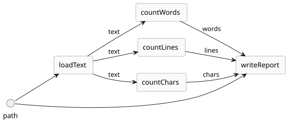

Groovy 6 features for Functional Programmers

Published: 2026-06-01 08:00AM
Introduction
What’s the best way to do functional programming on the JVM?
Groovy starts by inheriting Java’s answer in full. Optional, Stream,
CompletableFuture, Function, records, immutable collections, sealed types,
virtual threads — every JDK carrier and combinator is available, with
the usual Groovy sugar on top (closures, GINQ, parallel collections,
Awaitable, async/await). Groovy brings along most of Java’s
pattern/decomposition story with some enhancements and minor gaps
being addressed in GEP-20 targeted for Groovy 7.
For a lot of workaday code, that is already enough.
When you want more discipline than the JDK ships with — applicative
validation, persistent collections, an effect monad, a Try for
errors-as-values — your favourite existing library still works.
FunctionalJava, HighJ, and Vavr compose in Groovy unchanged; the DO
macro recognises their control carriers by name, no glue code required.
Groovy 6 adds a third option, complementary to both. Keep the plain
values, keep try/catch, keep the carriers Java already gave you —
and shift the discipline onto declarations the compiler verifies.
Purity is @Pure enforced by PurityChecker. Monoid is
@Reducer/@Associative enforced by CombinerChecker. Absence is
@Nullable enforced by NullChecker (with a strict mode that needs
no annotations at all). The discipline the wrapper-heavy path gives
you, without the cost of lifting every call boundary into a carrier —
the simplicity of the pragmatic path with the guarantees of the
elaborate one.
And — relevant before assuming this means scattering annotations throughout your codebase — most of these declarations are a library-side concern: written once by API authors, or by AI agents producing code that downstream readers (human or agent) can then reason about, and consumed by everyday application code without local annotation. We come back to that in Who writes the annotations? below.
The new pieces close a handful of the gaps that send functional programmers reaching for FunctionalJava, HighJ or Vavr when they work on the JVM:
-
@Associative/@Reducerannotations that put a monoid contract on a binary method, verified at compile time byCombinerChecker. -
@Pure/@Modifiesannotations that let the compiler tell you a method has no side effects (or only the ones you allow) — a specification-driven alternative to lifting effects into anIOmonad. -
A
DOmacro (GEP-23) giving Scala-for/ Haskell-donotation acrossOptional,Stream,CompletableFuture, Groovy’sAwaitableandDataflowVariable, recognised FunctionalJava and Vavr carriers, and any user type that opts in. -
NullChecker— including a flow-sensitivestrictmode requiring no annotations — for Maybe-style null-safety without the wrapper. -
val, nestedcopyWithand richer destructuring on top of records and@Immutable, for the everyday immutable-update shapes that otherwise need a lens library. -
@Decreasesand@Invarianton loops, providing termination measures and loop invariants of the kind a totality checker would require.
None of that turns Groovy into a pure-functional language: there are
still no higher-kinded types, no Functor/Applicative/Monad
hierarchy, and no totality checker in the compiler. It does mean the
parts of the FP toolkit that pay their way on a real JVM project —
algebraic laws on combiners, declared purity, monadic value
composition, exhaustive null handling, immutable updates — are now
first-class.
A companion project at
groovy6-functional
holds runnable versions of every example in this post.
One framing note before we start. Most of what
follows is core Groovy 6 — shipped or stabilising features like
NullChecker, DO, val and the contract annotations. A few pieces
are incubating and may still shift before release. And the final two
sections — the WIRE DSL and the SMT-backed checker — are companion
prototypes: spikes built on the same public extension SPI the Groovy
team uses for the in-tree checkers, included here to show how far that
SPI reaches, not as Groovy 6 features. Each is flagged again where it
appears.
What Groovy already gave you
Groovy has been a usable language for functional programmers since the 2.x line. Five things were already in the toolbox:
-
First-class closures and function composition. Closures are values;
<<and>>compose them;curryandrcurrypartially apply.var trim = { String s -> s.trim() } var upper = String::toUpperCase var sizeSq = (String::size) >> { it ** 2 } var composed = sizeSq << (trim >> upper) assert composed(' foo bar ') == 49 -
Memoization and trampolining.
closure.memoize(),memoizeAtMost(n), andClosure.trampoline()turn naive recursive definitions into something fit for production. -
Records, sealed types,
@Immutable, deep-immutable lists/maps via.asImmutable(). Value semantics without ceremony. The JVM-side building blocks for algebraic data types. -
Tail-recursive methods via
@TailRecursive— the transform rewrites the body to a loop. No stack growth forfactorial,mutualOddEven, list folds. -
Lazy streams and GINQ.
Stream, lazy iterators, and GINQ (a comprehension over collections and SQL-like sources) cover the lazy/declarative end of the lane.
Alongside these, the GDK keeps accreting FP-friendly collection
operators — groupByMany, zipWithNext,
collectMany, inject and friends — the practical-FP-on-the-JVM
vocabulary that lets workaday collection code read declaratively.
That toolkit was good for the workaday side of FP. It said little about the parts that distinguish FP-with-checking from FP-with-conventions: algebraic laws, declared effects, monadic composition for non-stream carriers, and ironclad immutability. Groovy 6 is mostly about those.
Monoids and Semigroups, checked
A monoid is an associative binary operation with an identity. In Haskell:
class Semigroup a where (<>) :: a -> a -> a
class Semigroup a => Monoid a where mempty :: aIn FunctionalJava you build a Monoid<A> by passing a combiner closure
and a zero. In HighJ you import the typeclass instance for Monoid<µ>.
Vavr stops short of a Monoid abstraction and reduces via
Foldable.reduce instead. While you can also use those libraries from
Groovy as is, you now also have the option of moving the algebra onto
the method:
import groovy.transform.Associative
import groovy.transform.Reducer
class Sum {
@Reducer(zero = '0')
static int add(int a, int b) { a + b }
}
class Concat {
@Reducer(zero = '""')
static String join(String a, String b) { a + b }
}
class Tally {
@Reducer(zero = '[:]')
static Map<String, Integer> merge(Map<String, Integer> a, Map<String, Integer> b) {
var out = new LinkedHashMap(a)
b.each { k, v -> out.merge(k, v) { x, y -> x + y } }
out
}
}@Reducer is the monoid form: associative plus a named identity. Use
@Associative alone when the operation is associative but has no
natural identity in the problem domain — a semigroup, usable with
unseeded reductions only:
class Largest {
@Associative
static int max(int a, int b) { a >= b ? a : b }
}The point is not the annotations. The point is the type-checking extension behind them:
@TypeChecked(extensions = 'groovy.typecheckers.CombinerChecker')
def reductions() {
assert (1..100).toList().injectParallel(0, Sum.&add) == 5050
assert ['a', 'b', 'c'].sumParallel(Concat.&join) == 'abc'
assert [3, 1, 4, 1, 5, 9, 2, 6].sumParallel(Largest.&max) == 9
// REJECTED at compile time — subtraction is not associative:
// [1, 2, 3].injectParallel(0) { a, b -> a - b }
}injectParallel and sumParallel partition, reorder and recombine
input. They are only correct when the combiner is associative — and
that is the bug class FP people normally protect themselves from by
encoding the structure as a Monoid<A> value. A non-associative
combiner like the subtraction example is a semantic error: it
compiles cleanly in Java and in Groovy without the checker, and
surfaces as a non-deterministic wrong answer at runtime. The checker
catches the same class of misuse a typeclass constraint rules out in
Scala or Haskell — occupying a similar ergonomic role — but without
lifting add into a wrapper and unlifting the result.
The Monoid/Semigroup types from FunctionalJava and HighJ are also
recognised, which means existing FJ-shaped combiners flow through
sumParallel without rewriting.
Purity and frame conditions — Groovy’s answer to IO / State
The other classical FP move is to lift effectful work into the type
system: IO for arbitrary effects, State s for threaded state,
Reader r for environment access, Writer w for log accumulation.
Groovy 6 takes a different route to the same outcome — verified
declarations, no lift / unlift:
class Calculator {
BigDecimal total = 0
List<String> ledger = []
@Pure
@TypeChecked(extensions = 'groovy.typecheckers.PurityChecker')
static BigDecimal vat(BigDecimal net, BigDecimal rate) {
net * (1 + rate)
}
@Requires({ amount > 0 })
@Ensures ({ total == old.total + amount })
@Modifies({ [this.total, this.ledger] })
@TypeChecked(extensions = 'groovy.typecheckers.ModifiesChecker')
void post(BigDecimal amount) {
total += amount
ledger << "+$amount".toString()
}
@Pure
@TypeChecked(extensions = 'groovy.typecheckers.PurityChecker(allows: "LOGGING")')
BigDecimal balance() {
log.fine "balance read"
total
}
}There are four FP-flavoured facts the compiler now knows about
Calculator:
-
vatis pure — referentially transparent in the Haskell sense.PurityCheckerrejects any side-effecting body. -
postmay only modifytotalandledger. Touch any other field andModifiesCheckererrors. This is theStatemonad’s job (what state can change) without the bind boilerplate. -
@Requires/@Ensuresare the Hoare-logic dual of theStatemonad’s state-transition function — pre- and post-conditions, withold.referring to pre-state. -
balanceis pure modulo logging. Its@TypeCheckedextension configuresPurityChecker(allows: "LOGGING"); theallowsoption draws from a small effect lattice (LOGGING,METRICS,IO,NONDETERMINISM) — graded effects, in the cats-effect sense, but the verification work is in the checker rather than the type.
For an FP audience the unfamiliar half is that none of these methods return a wrapped value. The familiar half is that the compiler knows what each method may and may not do, and a reader (or an AI agent) can work from the signature alone.
Monadic comprehensions: DO
GEP-23 introduces DO — a comprehension macro that desugars to the
carrier’s flatMap/map (or thenCompose/thenApply, or whatever
the carrier’s standard pair is). The notation is Scala-for /
Haskell-do shaped:
import static org.apache.groovy.macrolib.MacroLibGroovyMethods.DO
@TypeChecked(extensions = 'groovy.typecheckers.MonadicChecker')
Optional<String> greet(Map<String, String> users, String userId) {
DO(user in Optional.ofNullable(users[userId]),
name in Optional.ofNullable(user.split(/\|/)[0])) {
Optional.of("Hello, $name!".toString())
}
}
assert greet([u42: 'Alice|admin'], 'u42').get() == 'Hello, Alice!'
assert greet([u42: 'Alice|admin'], 'u99') == Optional.empty()The same shape works over Awaitable (so the dependency graph in an
async computation is in the source rather than spread across
thenCompose calls):
@TypeChecked(extensions = 'groovy.typecheckers.MonadicChecker')
Awaitable<String> greetByKey(String key) {
DO(id in fetchId(key),
name in fetchName(id),
msg in greeting(name)) {
async { msg }
}
}DO and for await (Groovy 6’s other "await"-shaped construct)
operate at different layers and are easy to confuse. DO composes
one result from a chain of dependent monadic steps; for await
iterates over many values pulled from a stream-shaped source
(Flow.Publisher, AsyncChannel, a generator). If the problem is
"three dependent calls produce a single answer", reach for DO. If it
is "a stream of events to process as they arrive", reach for
for await. The two compose at different layers — a DO chain can
sit inside the body of a for await loop, and an Awaitable produced
by DO can be one element of an upstream publisher consumed by
for await — but neither replaces the other.
That stream-shaped source is often a generator. A Groovy 6 generator
method yield`s values lazily and is pulled on demand, giving the
pull-based lazy-sequence end of the FP toolbox without an explicitly
built `Stream — naturally consumed by for await, or mapped and
filtered downstream like any lazy pipeline.
DO also composes over FunctionalJava’s Validation — no annotation,
no wrapper, no Groovy dependency on FunctionalJava, because
fj.data.Validation is recognised by name in the standard allow-list:
@TypeChecked(extensions = 'groovy.typecheckers.MonadicChecker')
Validation<String, Integer> add(String a, String b) {
DO(x in parsePositive(a),
y in parsePositive(b)) {
Validation.success(x + y)
}
}
assert add('2', '3').success() == 5
assert add('hi', '3').fail() == 'not numeric: hi'The same allow-list recognises Vavr’s control carriers
(io.vavr.control.Option, io.vavr.control.Try, io.vavr.control.Either,
io.vavr.control.Validation) by name, so existing Vavr-shaped code
composes through DO without rewriting and without Groovy taking a
dependency on Vavr:
import io.vavr.control.Try
import static org.apache.groovy.macrolib.MacroLibGroovyMethods.DO
@TypeChecked(extensions = 'groovy.typecheckers.MonadicChecker')
Try<Integer> divide(String a, String b) {
DO(x in Try.of { Integer.parseInt(a) },
y in Try.of { Integer.parseInt(b) }) {
Try.success(x.intdiv(y))
}
}
assert divide('20', '5').get() == 4
assert divide('hi', '5').isFailure() // short-circuits at x
assert divide('20', '0').isFailure() // short-circuits at the bodyVavr ships its own For(…).yield(…) form ("For-Comprehension") that
serves the same purpose in straight Java; DO reads as the Groovy-native
analogue, and a codebase that already uses Vavr-shaped control types in Java
gets the comprehension for free.
What DO does not do: it does not introduce higher-kinded types, it
does not mix carriers in one comprehension (nest for that), and it does
not synthesise a pure/return — the body must explicitly yield a
carrier value. That is the deliberate non-goal list in
GEP-23.
Linting native chains: MonadicShapeChecker
For codebases that prefer flatMap/map chains over comprehensions,
MonadicShapeChecker lints the chain against the same registry that
DO uses. It catches three classic foot-guns:
| Mistake | Checker says |
|---|---|
|
|
|
bind must return the same carrier |
|
|
The first two would be compile errors in Java, but Groovy’s
single-abstract-method coercion of closures normally lets them through —
the checker restores the Java guarantee. The third compiles cleanly in
both Java and Groovy: an Optional<Optional<Integer>> is a perfectly
well-typed value, just (almost certainly) not the one you intended. That
is the flatMap/map mix-up the checker catches for everyone.
Maybe-style null-safety without the wrapper
In Haskell, Maybe a is a discipline you adopt: every value that
might be absent is wrapped, the compiler tracks it, you handle the
Nothing case at the leaf.
In Groovy 6, NullChecker is the equivalent discipline without the
wrapper. To be precise, this is flow analysis over nullable references,
not an algebraic sum type — the discipline of Maybe, not its
representation. You can drive it with @Nullable/@NonNull if you like:
@TypeChecked(extensions = 'groovy.typecheckers.NullChecker')
int safeLength(@Nullable String text) {
if (text != null) {
return text.length() // ok — narrowed
}
-1
}…but a deliberate goal of the Groovy 6 approach is to not make you
litter code with annotations. Flow-sensitive strict mode does the
same analysis on entirely unannotated code:
@TypeChecked(extensions = 'groovy.typecheckers.NullChecker(strict: true)')
def strictDemo() {
def x = null
// x.toString() // compile error: x may be null
x = 'hello'
assert x.toString() == 'hello' // ok — reassigned
}That covers code under your control. The trickier case is the boundary: a third-party library that exposes possibly-null returns and never annotated them. Groovy 6 stacks a few mitigations here:
-
@Nullable/@NonNullare matched by simple name from any package — JSpecify, JSR-305, JetBrains, SpotBugs, Checker Framework, or your own marker — so whichever vendor’s annotations the library author did or didn’t pick, the checker sees them. -
Where the library is annotation-free, contract annotations contribute nullability facts: a top-level
x != nullconjunct in@Requiresmarks the parameter as implicitly@NonNull, andresult != nullin@Ensuresdoes the same for the return. You assert the boundary fact once at your wrapping method and the checker propagates it inward. -
@NullCheckauto-generates null guards on parameters where you want fail-fast behaviour rather than tracked nullability. -
@MonotonicNonNullcovers the lazy-init case (read as nullable until first assignment, non-null afterwards). -
Safe navigation (
?.) and the Elvis operator (?:) — Groovy features that pre-date NullChecker — are recognised by the checker as narrowing forms, so the idiomaticlib.maybe()?.size() ?: 0typechecks without further annotation.
The trade — versus Optional<T> everywhere — is the one Kotlin made:
the analysis is on the variable, not in the type, and the cost at the
call site is zero.
Immutability ergonomics
Three Groovy 6 changes make the day-to-day immutable-update shapes
match what you get from a Haskell record-update syntax or a Scala
copy call:
@Immutable(copyWith = true) class Address { String city, zip }
@Immutable(copyWith = true) class Person { String name; Address address }
val alice = new Person('Alice', new Address('NYC', '10001'))
val moved = alice.copyWith('address.city': 'Boston')
assert moved.address.zip == '10001' // structural sharing — untouched
val swapped = alice.copyWith {
name = 'Alice2'
address.city = old.address.city.reverse()
}
val (name: who, age: _) = [name: 'Bob', age: 30]
def (h, *t) = [1, 2, 3, 4]val is the immutable-binding companion to var. Nested copyWith
gives you lens-style updates without a lens library — structural
sharing is preserved transitively, so is-identity holds on untouched
branches. The destructuring extension covers the lightweight
data-extraction cases that often motivate pattern matching.
Termination and loop invariants
Totality matters to FP people. @TailRecursive was already there;
@Decreases and @Invariant on loops are new:
@Ensures({ result.isSorted() })
List merge(List in1, List in2) {
var out = []
var count = in1.size() + in2.size()
@Invariant({ in1.size() + in2.size() + out.size() == count })
@Decreases({ [in1.size(), in2.size()] })
while (in1 || in2) {
if (!in1) return out + in2
if (!in2) return out + in1
out += (in1[0] < in2[0]) ? in1.pop() : in2.pop()
}
out
}The @Invariant says nothing is lost or gained across iterations.
The @Decreases gives a lexicographic termination measure: the pair
[in1.size(), in2.size()] strictly decreases each round. That is the
sort of obligation a totality checker in Idris or Agda would impose.
The checker is contract-grade rather than proof-grade, but the
declaration is the same shape.
Property-based tests, mechanically derived from the annotations
The single biggest payoff of these annotations is that they are not just for the compiler. They are machine-readable, structurally identical across the codebase, and compiler-enforced — so an AI agent or a small ASM walker can use them as a specification:
Prompt:
For every static method annotated @groovy.transform.Associative,
emit a jqwik @Property method asserting f(f(a,b), c) == f(a, f(b,c)).
If the method also carries @Reducer(zero = "<expr>"), emit a second
@Property asserting f(a, <expr>) == a and f(<expr>, a) == a.Which produces, mechanically:
class MonoidLawsTest {
@Property boolean addIsAssociative(@ForAll int a, @ForAll int b, @ForAll int c) {
Sum.add(Sum.add(a, b), c) == Sum.add(a, Sum.add(b, c))
}
@Property boolean addHasZero(@ForAll int a) {
Sum.add(a, 0) == a && Sum.add(0, a) == a
}
@Property boolean tallyIsAssociative(@ForAll Map<String, Integer> a,
@ForAll Map<String, Integer> b,
@ForAll Map<String, Integer> c) {
Tally.merge(Tally.merge(a, b), c) == Tally.merge(a, Tally.merge(b, c))
}
}The agent never reads the body of add or merge. The compile-time
CombinerChecker is the guarantee that the annotation is trustworthy
enough to treat as a specification.
The same idea applies elsewhere:
| Annotation | Derivable property |
|---|---|
|
|
|
|
|
invocation idempotent, no observable effect |
|
every field not listed is bit-for-bit identical after the call |
This is the Groovy 6 design pitch in one sentence: declarations whose compile-time guarantee makes them safe for an agent to read as a spec, not as a comment.
Update: The companion repo locks the jqwik version at 1.9.3.
Read about the
recent
controversy
around 1.10.x before upgrading to that version (or NOT).
You might like to also check out the pbt-fj and pbt-vavr subprojects
in the companion repo which do the same generated property-based
tests using the functionaljava-quickcheck and vavr-test libraries.
Who writes the annotations?
A reader skimming this post might infer that turning these features on
means scattering @Pure, @Modifies, @Associative, @Reducer,
@Monadic, @Nullable and friends throughout application code. That is
not the intent.
Declarations are a producer-side property; checkers are a consumer-side property. The natural division of labour:
-
Libraries — Groovy stdlib, the JDK, FP-style libraries, and domain frameworks — declare annotations on the APIs they own. A repository library marks its lookup methods
@Nullable User findById(Long id); a monetary library carries@Associative @Reducer(zero = '0')on itsadd; a domain service marks its mutating methods with@Modifies({…})and its read methods with@Pure; a monadic carrier carries@Monadic(or its conventional method names match the structural rule and no annotation is needed at all). JSpecify, JSR-305, JetBrains and SpotBugs@Nullable/@NonNullannotations — matched by simple name from any package — already feedNullCheckerwithout anyone changing the library. -
User code consumes those declarations. Calling
repository.findById(id)under@TypeChecked(extensions = 'NullChecker(strict: true)')is enough to surface a "may dereference null" diagnostic — the library has already declared the contract. CallingsumParallel(money.&add)underCombinerCheckervalidates against the library’s@Associative. Callingservice.update(x)underModifiesCheckervalidates against the library’s frame condition. No annotation on the user’s side. -
Registries fill the gap when the library is owned elsewhere and not yet annotated. Vavr’s control types compose through
DObecause the core allow-list names them, not because Vavr was modified or because the user wrote@Monadicon a wrapper. -
Config scripts and compile-time customisers remove the only annotation that user files do otherwise carry — the
@TypeChecked(extensions = '…')that turns each checker on. A singleASTTransformationCustomizerregistered in a Groovy-configscriptenables the relevant checker for an entire module; build-tool equivalents exist for Gradle (compileGroovy.groovyOptions.configurationScript) and Maven. The examples in this post carry the per-file annotation as a pedagogical convenience — a reader can then see exactly which checker is in play — but the production deployment lives in build config, once, and user files stay annotation-free.
User code acquires annotations of its own only at system boundaries —
public APIs the user owns, framework handlers, code that needs to
propagate a contract to its own callers, or local logic the user wants
the compiler to double-check against an @Ensures postcondition. For
everyday application code that just calls libraries, the checkers do
their work against the libraries' declarations and the application
stays annotation-free.
This matters for every checker in the post. The
"compile-time Maybe without the wrapper" pitch reaches full strength
exactly when the libraries you depend on already carry @Nullable /
@NonNull (or were compiled with JSpecify) — NullChecker then
delivers the static guarantee on the consumer file with no local
ceremony. The same property holds for CombinerChecker,
PurityChecker, ModifiesChecker, MonadicChecker and the contract
annotations. The annotations are an investment the library author
makes once; every downstream codebase running the matching checker
recovers the value of it on every build.
GEP-24 is the natural extension of this
story to errors: a candidate for Groovy 7 sketching library-side
@Raises plus consumer-side ExceptionChecker for the declaration
path, and an opt-in Result<T> carrier (with an attempt { } macro
and an @AsResult AST transform) recognised by DO for the
runtime-composition path — all following the same producer-side /
consumer-side split.
Building your own checked DSL: a wire-diagram demo
Every checker shown so far ships with Groovy. The same machinery —
annotations, type-checking extensions, macros, runtime libraries —
has always been open to anyone willing to write a groovy.transform
analogue for their own domain. The producer/consumer split applies
to user libraries too: the library publishes the annotation, the
checker and any macro; callers add @TypeChecked(extensions = '…')
and write annotation-free code against the contract.
To make that concrete, the companion repo contains a worked example.
It ports the cartesian-categories idea from
a recent Haskell post
(WireCat) into a small Groovy library that captures a composition
of named primitives both as something runnable and as something
drawable. The two views derive from one definition — the property
WireCat preserves by forbidding arr, the property a small
WIRE { } macro preserves here.
Producer side
Plain Groovy methods. The macro reads the wiring from the call site, so the primitives carry no wire-specific annotation:
class WordCountPrimitives {
static String readPath() { System.getenv('WC_FILE') ?: defaultSample() }
static String loadText(String path) { new File(path).text }
static int countWords(String text) { text.split(/\s+/).findAll { it }.size() }
static int countLines(String text) { text.readLines().size() }
static int countChars(String text) { text.length() }
static void writeReport(String path, int words, int lines, int chars) {
println "${path}: ${words} words, ${lines} lines, ${chars} chars"
}
}Consumer side
A proc-notation WIRE { … } macro using << as the binding
marker — the same operator Groovy 6 already uses for
DataflowVariable.bind. Argument lists are the wiring, not
visual sugar:
def wc = WIRE(WordCountPrimitives, 'WordCount', ['path']) {
text << loadText(path)
words << countWords(text)
lines << countLines(text)
chars << countChars(text)
writeReport(path, words, lines, chars)
}At compile time the macro rewrites this body into literal Groovy 6
dataflow code, auto-adding the async { } wrapping and the
df. prefixes so each binding becomes a real
groovy.concurrent.DataflowVariable write:
{ Dataflows __df ->
def __tasks = []
__tasks << async { __df.text = WordCountPrimitives.loadText(__df.path) }
__tasks << async { __df.words = WordCountPrimitives.countWords(__df.text) }
__tasks << async { __df.lines = WordCountPrimitives.countLines(__df.text) }
__tasks << async { __df.chars = WordCountPrimitives.countChars(__df.text) }
__tasks << async { WordCountPrimitives.writeReport(__df.path, __df.words, __df.lines, __df.chars) }
__tasks.each { await(it) }
[path: __df.path, text: __df.text, words: __df.words, lines: __df.lines, chars: __df.chars]
}The macro is sugar over the idiomatic Groovy 6 form; nothing special happens at runtime. Concurrency, blocking reads, and single-assignment semantics are all the built-ins doing their normal job.
The result is a WireResult with .toPlantUml() (the diagram,
captured at compile time) and .run(inputs) (executes the
auto-generated dataflow code, returns the bindings as a Map).
The wire library has three pieces — an @Wirable annotation, a
WireChecker type-checking extension, and the WIRE macro —
usable individually or in combination. The macro form shown above
uses just the macro. The companion repo also includes a direct
Wire.wire('name') { task X::y } builder that takes method
references to primitives carrying their wiring as annotations:
@Wirable(inputs = ['path'], outputs = ['text'])
static String loadText(String path) { new File(path).text }
@Wirable(inputs = ['text'], outputs = ['words'])
static int countWords(String text) { text.split(/\s+/).findAll { it }.size() }
// …Adding @TypeChecked(extensions = 'groovy/wire/WireChecker.groovy')
to the method enclosing the Wire.wire { … } call lifts the same
field-flow check from runtime to compile time. The three pieces
layer freely — annotation alone for the runtime check, annotation
plus checker for compile-time validation, or the macro when
you’d rather skip the metadata altogether.
The diagram, derived
wc.toPlantUml() returns the structural view captured at the
same compile-time pass that emitted the executor — not hand-drawn,
not maintained separately, regenerated on every build:

What’s checked, what isn’t
Three compile-time checks fire as the macro walks the body:
-
every reference must be bound — a graph-level input or the LHS of an earlier
<<; -
the using class must contain a method matching each call name;
-
at least one overload of that method must have the right arity.
For example, words << countWrods(text) reports:
WIRE: WordCountPrimitives has no method named 'countWrods'words << countWords(path, text) reports:
WIRE: WordCountPrimitives.countWords takes 1 arg(s),
but called with 2What remains a runtime concern: per-field type compatibility
(does the String that producer text binds match the String
parameter consumer countWords expects), and full type
propagation through the DSL. Neither is hard — the first is
roughly another 50 lines on the macro; the second is more
substantial — and both are deferred for a follow-up.
That partial-static-checking position is the same trade made
elsewhere in this post: flow-sensitive analysis lives outside the
type system (cf. NullChecker(strict: true)); declarations carry
the contract; the type stays simple and the checker does the work.
One thing still missing
The companion repo writes the generated PlantUML to a sidecar
.puml file that asciidoctor ([plantuml] blocks above) and
markdown pipelines can include directly. The natural next step is
a Groovydoc hook — say @RenderInGroovydoc as a meta-annotation
on the annotation type — that would let an API doc embed the same
PlantUML from a method’s @WireDiagram(plantuml = '…') annotation
without a separate file. Pitched the same way as everything else
here: declarations as specs, now consumed by the docs tool too.
Strictly smaller than a GEP, narrower than a language change.
Where the code lives
The code lives in six small subprojects under
groovy6-functional:
wire/ (annotations, builder DSL, dataflow runtime, PlantUML renderer),
wire-checker/ (the WireChecker extension), wire-macro/ (the WIRE
@Macro method), and three consumer demos for the builder,
builder-with-checker and macro forms. See the repo for the full
breakdown.
No compiler change, no GEP. The pattern this post has been describing — declared contracts, compiler-enforced spec, producer/consumer split — transfers cleanly to library authors using only the SPI hooks the Groovy team uses to build the in-tree checkers.
From contract-grade to proof-grade: an SMT-backed precondition, postcondition, and loop checker
The previous demo wrote a structural checker — names, arity, field flow. This one writes a semantic one, and it is worth dwelling on how far the same SPI reaches.
Look back at the @Requires/@Ensures/@Invariant/@Decreases
surface from earlier. Those names were not invented for Groovy. They
are, almost verbatim, the keywords of
Dafny — requires, ensures, invariant,
decreases — and the diagnostic taxonomy (precondition, postcondition,
loop invariant, negative index, division by zero, null dereference)
is lifted from OpenJML. The design-by-contract
lineage runs back through Eiffel; Groovy’s contribution is wearing it
as annotations a type-checking extension can read. But as noted when
they first appeared, the in-tree checkers are contract-grade, not
proof-grade: the annotation states the obligation, and structural
checks fire, but nothing discharges the verification condition against
the call site. Dafny and OpenJML close that gap with an SMT solver.
Here is the part that might be surprising: for a tractable fragment, you can
close it in Groovy today — no compiler change, no GEP — by putting a
solver behind a type-checking extension. The spike below covers
preconditions, postconditions, and loops (@Invariant plus a
@Decreases termination measure) over one fragment
(linear integer arithmetic, comparisons, and booleans). Anything
outside that fragment is reported as a loud "skipped", never a silent
pass — OpenJML’s ESC-mode discipline, kept honest.
Let’s start by exploring preconditions.
Producer side
The classic Dafny example, an integer square root that requires a non-negative input:
class ISqrt {
@Requires({ x >= 0 })
static int isqrt(int x) {
(int) Math.sqrt((double) x)
}
}Consumer side
Turn the checker on with @TypeChecked(extensions = '…') — no
@CompileStatic, which suppresses extension-hook dispatch — and write
ordinary code. Here is a call that looks guarded:
@TypeChecked(extensions = 'verification.VerifyChecker')
static int go(int n) {
if (n != 0) {
return ISqrt.isqrt(n) // looks safe — but n could be -1
}
0
}The guard n != 0 is the off-by-one a tired developer writes when
they meant "not negative". The build does not let it through. As the
type checker walks the body, the extension harvests the path condition
from the enclosing if, asserts it together with the negation of
the precondition, and asks Z3 whether that is satisfiable. It is — and
the model is the counterexample:
[Static type checking] - Cannot prove precondition of isqrt at this call site
required: (x >= 0)
counterexample: n = -1, x = -1That last line is the whole point. The diagnostic does not say
"constraint not satisfied"; it says with n = -1 it fails, as Dafny
does if you ask it (via --counterexample). Tighten the guard and the
obligation discharges; the same code now compiles clean:
if (n >= 0) {
return ISqrt.isqrt(n) // verified: n >= 0 ⇒ x >= 0
}The almost-correct version, the message that names the bad value, the
one-character fix, the green build — for the linear-integer fragment it
covers, that loop is the experience a proof assistant gives you,
running inside groovyc.
What it proves
The checker is reasoning, not pattern-matching. Each of these call
shapes compiles because Z3 discharges x >= 0:
| Call shape | Why it verifies |
|---|---|
|
Literal — |
|
Path condition matches the precondition exactly. |
|
|
|
The |
|
Linear arithmetic over a literal multiplier, under |
And the rejections all arrive with a refuting model: the bare literal
isqrt(-1) (x = -1), the unguarded isqrt(n) (n = -1), and the
contradictory if (n < 0) isqrt(n) (n = -1).
Postconditions, too
The same machinery checks @Ensures postconditions — proving what a
method returns, not just what its callers pass. The one structural
difference is that a postcondition is verified against the method’s own
body, so the class declaring it is itself @TypeChecked. A wrong
result is refuted just like a precondition, with the values that break
it:
@Ensures({ result >= a && result >= b })
static int max(int a, int b) {
if (a > b) b else a // returns the wrong branch
}[Static type checking] - Cannot prove postcondition of max holds on this return path
ensured: ((result >= a) && (result >= b))
counterexample: a = 0, b = 1Swap the branches back to if (a > b) a else b and it verifies. The
checker walks every execution path of the body — straight-line code,
if/else, single-assignment locals — and discharges the obligation
on each; the companion repo’s MinMax/BadEnsures carry the worked
examples.
Loops, too
Loops are the classical inductive case, and the same solver handles them
straight from the stock @groovy.contracts.Invariant/@Decreases
that groovy-contracts already runtime-checks. Each annotated while
raises four obligations (establishment,
preservation, use, and — from @Decreases — termination), and a broken
one is named, with a counterexample:
@Requires({ n >= 0 })
@Ensures({ result == n })
static int countUp(int n) {
int i = 0
@Invariant({ 0 <= i && i <= n })
@Decreases({ n - i })
while (i < n) {
i = i + 2 // overshoots n — the invariant is not preserved
}
return i
}[Static type checking] - Cannot prove loop invariant is preserved by the loop body in countUp
invariant: ((0 <= i) && (i <= n))
counterexample: i = 0, n = 1Restore i = i + 1 and all four obligations discharge; weaken the
invariant or break the measure and the diagnostic points at exactly
which one fails. Because the annotations are the stock ones, the same
loop also keeps its groovy-contracts runtime check — proof-grade at
compile time, contract-grade at run time, from one declaration. The
companion repo’s Loops/BadLoops carry one mutant per obligation.
What’s checked, what isn’t
The scope differs by mode. At a
call site, the precondition check reasons about the argument
expression and the enclosing if guards only — it does not track local
assignments there, so int sq = k * 1; isqrt(sq) is outside scope
(sq is unconstrained at the call). For a postcondition, the body
walker follows each execution path through straight-line code,
if/else and single-assignment locals; a while carrying an
@Invariant is discharged inductively (its body may re-assign). The
remaining edges of the fragment — un-annotated loops, method calls,
division, arrays, quantifiers, non-linear arithmetic — are reported as
skipped, loudly, rather than waved through. That is the same trade made
throughout this post:
flow-sensitive work lives outside the type system, declarations carry
the contract, and the type stays simple while the checker does the work.
One engineering detail reframes what a type-checking extension is: this extension does not merely reference Z3 — it runs Z3 while the consumer compiles. A type-checking extension is just code on the compiler’s classpath, free to call out to anything on the JVM; "runs a theorem prover during `groovyc`" is a perfectly fine thing for it to do.
Where it could go
The scaffold generalises along the lines OpenJML’s taxonomy suggests,
each a new obligation site on the same solver pipeline. Postconditions
and loops already work (above); the natural next steps are array-bounds
and division-by-zero as implicit preconditions (0 ⇐ i && i <
arr.size(), divisor != 0) fired automatically at each index or
division, and then bounded quantifiers for sortedness and
"every element satisfies P" facts. Each is strictly smaller than a GEP,
and none needs a compiler change.
Where the code lives
The code lives in two subprojects under
groovy6-functional:
verification/ (the Groovy-to-SMT encoder, the VerifyChecker
extension, the Z3 backend, and a CONVERSION-phase transform that
captures each stock @groovy.contracts contract’s source text — the
built-in annotation keeps only a generated closure class, so the text
would otherwise be gone) and verification-demo/ (the ISqrt,
MinMax/BadEnsures and Loops/BadLoops worked examples). See the
repo for the full breakdown.
This is a spike, not a product — in the same spirit as WireCat, it demonstrates reach, not a finished tool. But the reach is the message: the very SPI the Groovy team uses for its in-tree checkers is enough to host a real SMT solver and turn a contract-grade annotation proof-grade, for a fragment, with counterexamples, today. A hat-tip to Dafny for setting the counterexample-UX bar and to OpenJML for the loud-unknown discipline this spike borrows wholesale.
How it stacks up
For a JVM-resident FP audience, the comparison set is FunctionalJava,
Vavr, HighJ, and the language alternatives Scala and Kotlin, with
Haskell kept as the reference point. The Scala column is really
Scala+Cats where it names cats.* types; Kotlin’s FP rows lean on
the Arrow library similarly. It splits across two tables that share
the Concept and Groovy 6 columns — first against the JVM FP libraries,
then against the languages.
| Concept | Groovy 6 | FunctionalJava | Vavr | HighJ |
|---|---|---|---|---|
Closures and composition |
native ( |
|
|
|
Monoid / Semigroup |
|
|
n/a (uses |
|
Purity & effects |
|
n/a (convention only) |
|
|
Frame conditions |
|
n/a |
n/a |
n/a |
Monadic comprehension |
|
n/a (hand-written |
|
simulated, with µ tags |
Null / absence |
|
|
|
|
Validation / errors |
|
|
|
|
Persistent collections |
|
|
|
n/a |
Termination |
|
n/a |
n/a |
n/a |
Higher-kinded abstraction |
no |
no (encoded by hand) |
no (encoded by hand) |
simulated HKT |
| Concept | Groovy 6 | Scala | Kotlin | Haskell |
|---|---|---|---|---|
Closures and composition |
native ( |
native ( |
native (lambdas, |
native |
Monoid / Semigroup |
|
|
|
|
Purity & effects |
|
|
|
|
Frame conditions |
|
n/a (libraries) |
n/a |
n/a |
Monadic comprehension |
|
|
|
|
Null / absence |
|
|
native nullable types ( |
|
Validation / errors |
|
|
|
|
Persistent collections |
|
|
|
native (persistent everywhere) |
Termination |
|
n/a (libraries) |
n/a |
totality checker (extensions) |
Higher-kinded abstraction |
no |
native |
no (Arrow dropped HKT encoding) |
native |
The point of the table is not that Groovy 6 ranks ahead of Scala or Haskell on any of these rows. It is that the column for the checked features used to be empty in Java’s heritage — and now isn’t.
Conclusion
Groovy 6 is not asking you to think about endofunctors. It is asking you to declare what your methods do, accepting that the compiler will check, and giving you the notation to compose values across the carrier types you already use.
-
Monoid / Semigroup is now a contract on a method, not a wrapper type — verified by
CombinerChecker. -
@Pure,@Modifiesand the contract annotations turn each method into a self-contained spec — a different shape fromIO/State, the same reasoning payoff. -
DOgives you thefor/donotation acrossOptional,Stream,CompletableFuture,Awaitable, the FunctionalJava and Vavr control carriers (io.vavr.control.{Option, Try, Either, Validation}), and any user type with the right shape, without committing the language to higher-kinded types. -
NullChecker, nestedcopyWith, destructuring,val,@Decreasesand@Invariantfill the everyday gaps that send people to libraries. -
The same extensibility hooks the language team used for the in-tree checkers are open to library authors: a
WIRE { name << call(args) }proc-notation macro that compiles to literalasync { df.X = … }Groovy 6 dataflow code, with bound-name, existence and arity checks at expansion time, ports the WireCat cartesian-categories idea on the same SPI surface. The same surface reaches further still — a type-checking extension that runs an SMT solver during compilation turns a contract-grade@Requiresproof-grade for a linear-integer fragment, emitting Dafny-style counterexamples: a theorem prover, albeit for a targeted fragment, hosted ingroovyc, no compiler change required.
For new code on the JVM, the takeaway is that @Pure, @Modifies,
@Associative and @Reducer cover most of what teams used
FunctionalJava and HighJ for — and they do it on your own types,
without inheritance and without lift/unlift. FunctionalJava, HighJ, and
Vavr remain useful when you want the libraries' richer value-level
combinators: FunctionalJava and Vavr for applicative-style error
accumulation via Validation;
Vavr additionally for Try/Either as runtime-composable carriers
where failure-as-a-value is the requirement, and for persistent
collections with structural sharing — both gaps not yet filled in
Groovy core. The Try/Either gap is the subject of
GEP-24, a Groovy 7 candidate that proposes
spec-side @Raises + ExceptionChecker and carrier-side Result<T>
following the same two-layer pattern used elsewhere in this post.
References
-
GEP-24 — Errors as values: compile-time
Trywithout the wrapper (Groovy 7 candidate) -
Groovy 6 release notes — Designed for Human and AI Reasoning
-
Native Async/Await for Groovy — the
AwaitablecarrierDOcomposes -
Vavr — Java FP library with
Try/Either/Validation/Optioncontrol carriers, persistent collections, tuples, and theFor(…).yield(…)For-Comprehension form. The control carriers are in `DO’s standard allow-list (Groovy 6). -
WireCat: Visual Programming with Cartesian Categories — the Haskell post that the
wiredemo is modelled on -
Dafny — the verification-aware language whose
requires/ensures/invariant/decreaseskeywords and counterexample UX the contract annotations and the SMT spike echo -
OpenJML — JML + SMT for Java; source of the diagnostic taxonomy and the loud-"unknown"-over-silent-pass discipline
-
Companion code for this post — the
wire-*subprojects covering the macro form (shown above) plus the builder and builder-with-checker variants, and theverification/verification-demosubprojects for the SMT-backed precondition spike